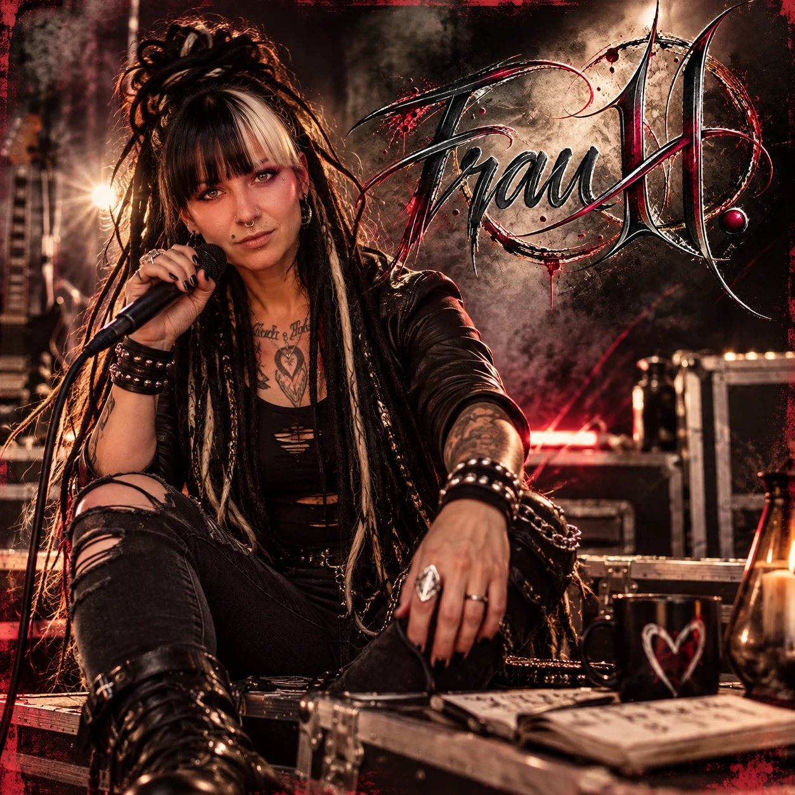
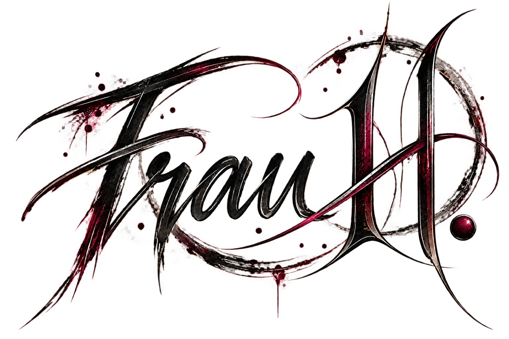
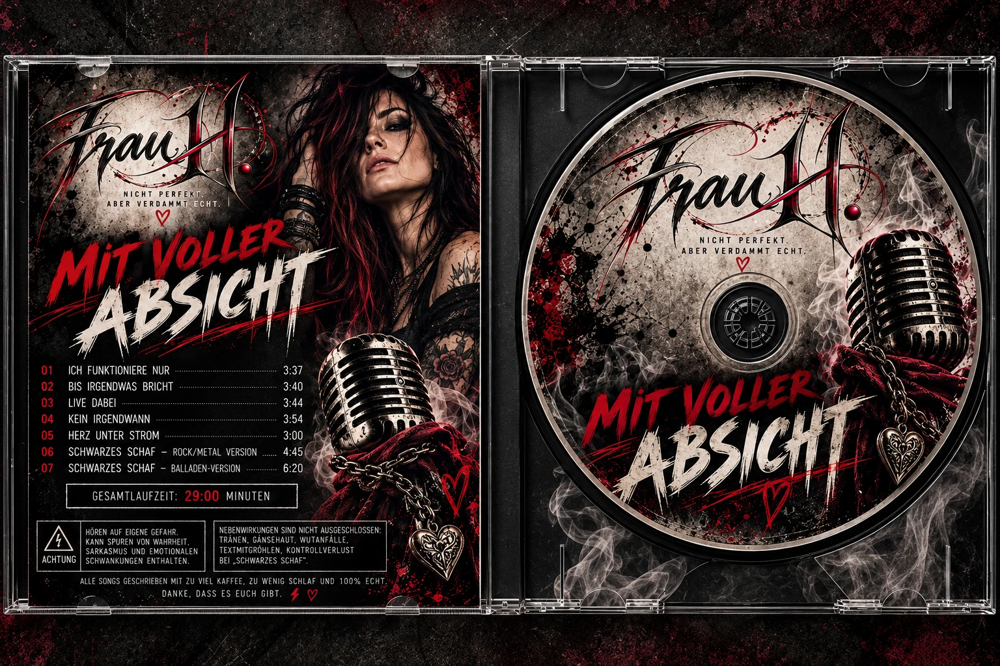

Ich musste jetzt wirklich lachen + Gänsehaut und Tränen in den Augen.Private Rückmeldung zu einem Song

Virtuelle KI-Künstlerin · Deutschsprachiger Rock

Rebellisch. Ehrlich.
Kompromisslos.
Kompromisslos.
Nicht für jeden.
Aber für die, die fühlen.
DeutschrockAlternative RockMelodischer Heavy Metal

▶ Album öffnen & Songs anhörenDas Album · Projektvorschau
Mit voller
Absicht.
Ecken. Kanten. Und kein Bedürfnis, jedem zu gefallen.
„Mit voller Absicht“ steht für die Haltung hinter Frau H.: Gefühle aussprechen, Widersprüche zulassen und der eigenen Stimme Platz machen. Dunkle Gitarren treffen auf Melodien, die bleiben.
Den Sound kennenlernen ↓Albumkonzept für die Projektpräsentation.Klick auf die CD und höre alle acht Songs auf der Albumseite. Ein Veröffentlichungstermin steht noch nicht fest.
Echte Nachrichten · Echte Emotionen
Wenn Musik mehr sagt als Worte.
Manche Songs bleiben nicht nur im Ohr. Sie lösen etwas aus.
Nicht für jeden. Aber für die, die fühlen.
Der Sound
Für alles, was
nicht leise bleibt.
Deutschsprachige Texte. Druckvolle Gitarren. Gefühl mit Haltung. Frau H. bewegt sich zwischen Widerstand und Verletzlichkeit – und lässt beides nebeneinander stehen.
Deutschrock
Klare Worte und kantige Riffs. Geschichten, die nah dran sind, auch wenn sie unbequem werden.
Alternative Rock
Zwischen Aufbruch und innerem Gegenwind. Mit Raum für Brüche und einen eigenen Blick auf die Dinge.
Metal-Balladen
Melodie trifft Wucht. Für die Momente, in denen eine leise Geschichte einen lauten Refrain braucht.
VIRTUELLE KI-MUSIKKÜNSTLERINDigitale Figur.
Digitale Figur.
Klare Haltung.
Frau H. ist ein virtuelles Musikprojekt für Deutschrock, Alternative Rock und melodischen Heavy Metal. Ihr Erscheinungsbild und ihre Musik entstehen mithilfe künstlicher Intelligenz.
Im Mittelpunkt stehen eine eigenständige Künstlerpersönlichkeit und Texte über das, was unter der Oberfläche liegt: Verletzlichkeit, Widerstand und den Wunsch, sich nicht ständig passend machen zu müssen.
Ihre digitale Herkunft gehört offen zu diesem Projekt. Genau wie Schwarz, Bordeaux und eine ordentliche Portion Eigensinn.
Frau H.
„Nicht für jeden.
Aber für die, die fühlen.“
Das ist erst der Anfang
Hier wird’s noch laut.
Neue Songs, Musikvideos und Einblicke bekommen hier ihren Platz. Diese Website zeigt die Marke Frau H. als Vorschau für die Projektvorstellung.
Zurück nach oben ↑